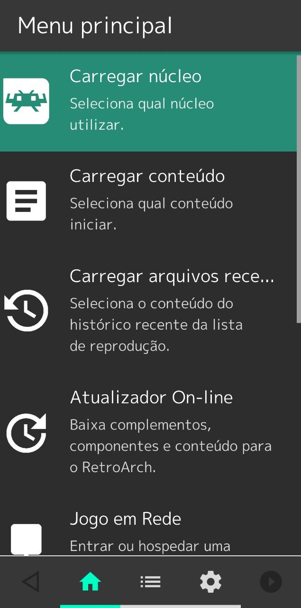
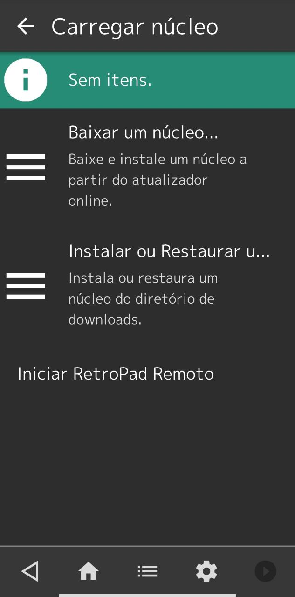
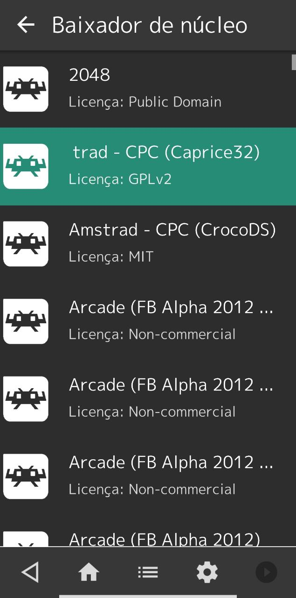
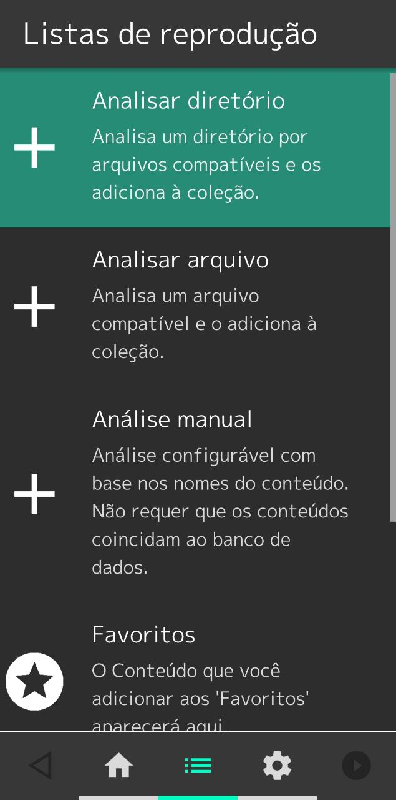
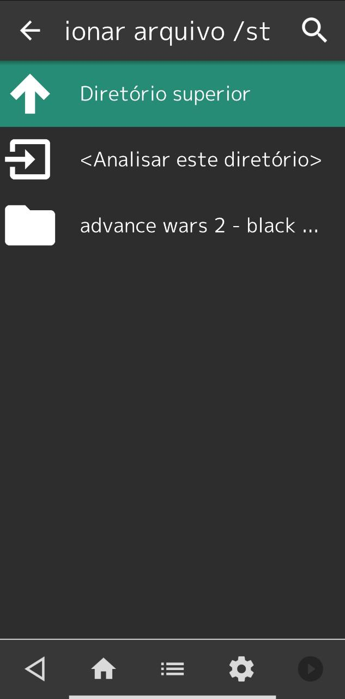
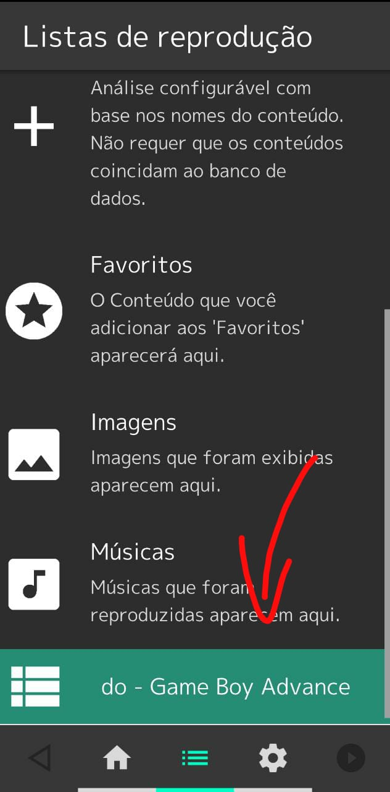
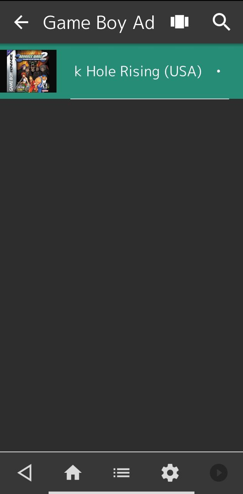
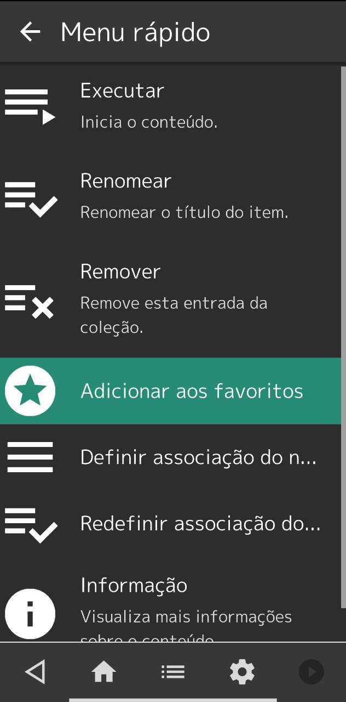
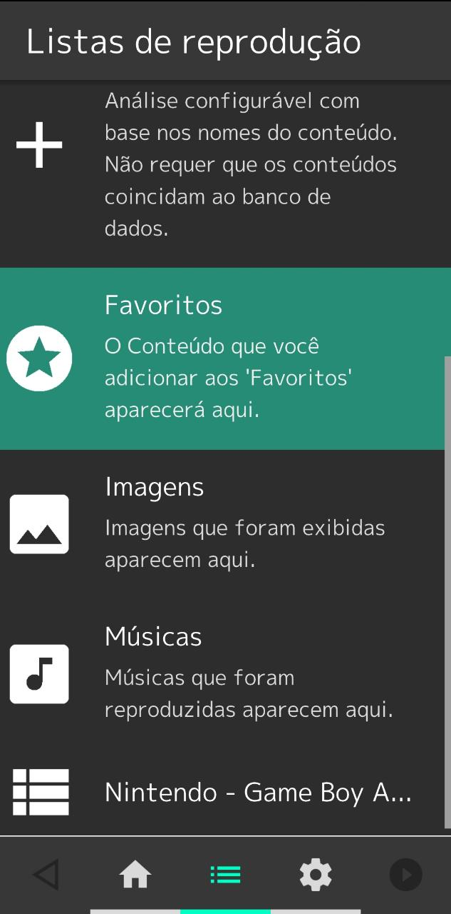
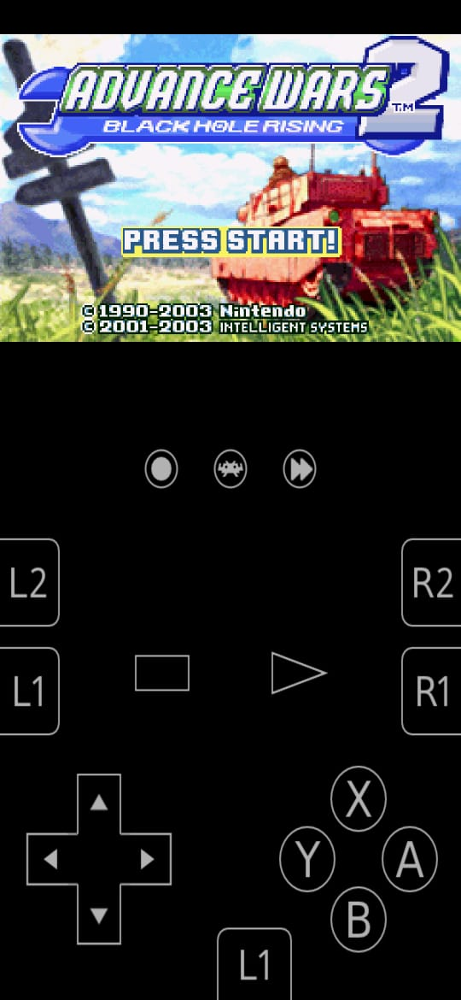

Retroach
RetroArch é uma interface para emuladores, motores de jogos e players de mídia. Ele permite que você execute jogos clássicos em uma ampla variedade de computadores e consoles por meio de sua interface gráfica elegante. As configurações também são unificadas para que a configuração seja feita de uma vez por todas. Além disso, você pode executar discos de jogos originais (CDs) no RetroArch. RetroArch possui recursos avançados como shaders, netplay, retrocesso, tempos de resposta do próximo quadro, tradução automática, recursos de acessibilidade cega e muito mais!
Por que usar o Retroarch?
Gratuito, código aberto, personalizável, concetra quase todo o cenário da emulação em um único aplicativo... Tá bom o suficiente? Aqui você não precisa pagar por emuladores ou por funções, apenas instale e use.
Baixar Retroarch na Playstore Baixar Retroarch versão 64bits na PlaystoreInstalei... E agora?
Agora você precisa entender um básico de emulação 😄. Na computação, emulador é o programa ou dispositivo que permite que um sistema se comporte como outro sistema. O que o Retroarch vai fazer é criar uma interface e também uma configuração universal para que você baixe os núcleos de emulação (quase que como baixar um videogame para dentro do Retroarch) e rode os jogos que deseja.
Sendo assim você pode ter uma configuração para tela, som, controles, gravação e até para se jogar online que seja comum para todos os emuladores. Sem precisar ficar abrindo programas diferentes ou mesmo ficar reconfigurando tudo.
A primeira coisa que você precisa para jogar é um núcleo de emulação. Depois você precisa do arquivo do jogo em si e em alguns casos você precisa do arquivo do sistema do videogame (BIOS).
Cada emulador (núcleo) tem seu uso, alguns são voltados para desempenho (e rodam em qualquer máquina porém não perfeitamente igual o videogame) enquanto outros para precisão (que são bem parecidos com a maneira que o videogame funciona mas pesam bastante). Não existe emulador bom ou ruim! Cada emulador tem seus prós e contras e ciclo de desenvolvimento.
Para baixar um emulador vá em Carregar núcleo no menu principal, depois selecione Baixar um Núcleo e selecione o núcleo que você deseja instalar.
  Núcleos que eu recomendo para os sistemas mais comuns (com exemplos de jogos da plataforma):
- FinalBurn para CPS1 (Cadillacs and Dinosaurs), CPS2 (Hyper Street Fighter II - The Anniversary Edition) e Neo Geo (Metal Slug X).
- mGBA para GameBoy Advance (Pokemon Emerald)
- NestopiaUE para Nintendinho (Double Dragon II: The Revenge)
- Snes9x - Current para Super Nintendo (Super Mario World)
- Genesis Plus GX para Master System (Enduro Racer), Mega Drive (Sonic 2) e SegaCD (Snatcher)
- PCSX ReARMed para PlayStation (Crash Bandicoot)
Tá mas... Onde consigo os jogos?
Varia conforme a plataforma, cada plataforma trabalha com um tipo de arquivo e existem páginas dedicadas para uma ou mais plataformas. Eu recomendo o GameTronik e Planetemu para CPS1, CPS2 e NEOGEO e recomendo o Vimm's Lair para as demais plataformas.
Baixei o jogo, e agora?
Depois que você já baixou o núcleo da plataforma, eu recomendo que você crie uma pasta no seu celular especificamente para colocar os jogos. Após colocar os arquivos dos jogos nessa pasta você pode ir no menu Listas de Reprodução no Retroarch e selecionar a pasta que você criou com a opção Analisar diretório, Se o arquivo for válido uma lista de reprodução da plataforma será criada.
  Selecionando o jogo você vai abrir o Menu Rápido, onde você pode executar o jogo, renomear ou Adicionar aos Favoritos para facilitar o carregamento.
  Baixei um jogo e não funcionou, e agora?
Para que o emulador funcione corretamente é necessário que você entenda as suas especificações, quais arquivos ele lê e se ele precisa ou não de um arquivo de sistema (BIOS). Por exemplo, o emulador de PlayStation precisa encontrar um arquivo BIOS para funcionar (como o scph1001.bin) e lê arquivos tipo .bin .cue .img .mdf .pbp .toc .cbn .m3u e .ccd, enquanto o de emulador de Neo Geo lê .zip e .7z com um nome específico (precisa estar compactado) e que no diretório de sistema contenha as imagens de sistema das regiões do videogame num outro arquivo também compactado e com nome específico (neogeo.zip). Já alguns outros emuladores não precisam de arquivos de sistemas MAS tem uma emulação mais precisa ou mesmo apresentam mais funções caso você tenha o arquivo de sistema. O ideal é que você sempre utilize um arquivo de sistema. Se você tiver em dúvida pode acessar o docs.libretro.com, selecionar o emulador no menu a esquerda da página (exemplo: For Users > Sega Emulation > Sega Saturn) e verificar a compatibilidade de arquivos e as dependências dos emuladores.
Abriu!
Bom saber! Uma vez que o jogo está aberto você tem na tela os controles padrão e os atalhos para trocar por comando analógico para digital, o atalho para o Menu Rápido e o botão de acelerar a reprodução do jogo (para passar cenas longas e tal).
No Menu Rápido você encontra as opções de reiniciar o jogo, fechar o jogo, captura de tela (print), seleção do compartimento de jogo salvo (escolher o bloco de save), opções do núcleo, configurações de controle, rebobinamento (sim, tem como rebobinar o jogo no Retroarch), trapaças (cheats) e até informações do jogo.
Eu não entendi como funciona os controles...
Como o Retroarch é um frontend para diversos emuladores, ele utiliza um sistema chamado Joypad Auto Configuration que vai fazer uma configuração universal para todos os emuladores com base na sua configuração de controle, de modo que você não precise reconfigurar para cada emulador. Caso deseje, você pode fazer configurações de controle específicas para núcleos e até mesmo jogos. Eu por exemplo utilizo uma configuração padrão para todos e uma específica para Metal Slug.
Eu vi no menu uma opção de Jogo em Rede, é pra jogar online mesmo?
Sim! Se você e seu amigo tem a mesma versão de núcleo e a mesma versão do jogo vocês podem jogar a mesma partida em 2 dispositivos diferentes conectados via rede. Um dos jogadores deve iniciar no modo host (Anfitrião) e configurar o nome da sala, ativar ou não servidor de relay (caso o outro jogador não veja a sala o relay facilita a comunicação entre os dispositivos) e até mesmo colocar senha para evitar curiosos, enquanto o outro jogador atualiza a lista de salas e seleciona a sala e o jogo se inicia. É extremamente preciso se vocês conectam no mesmo roteador e se tiver uma boa conexão da pra ter uma ótima experiência até mesmo se você e seu amigo estão em lugares diferentes da mesma cidade.